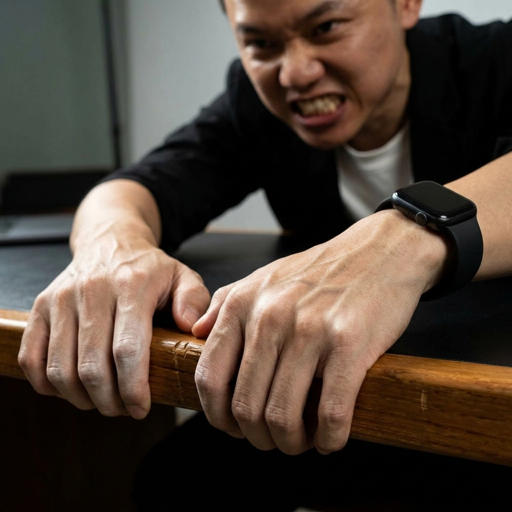
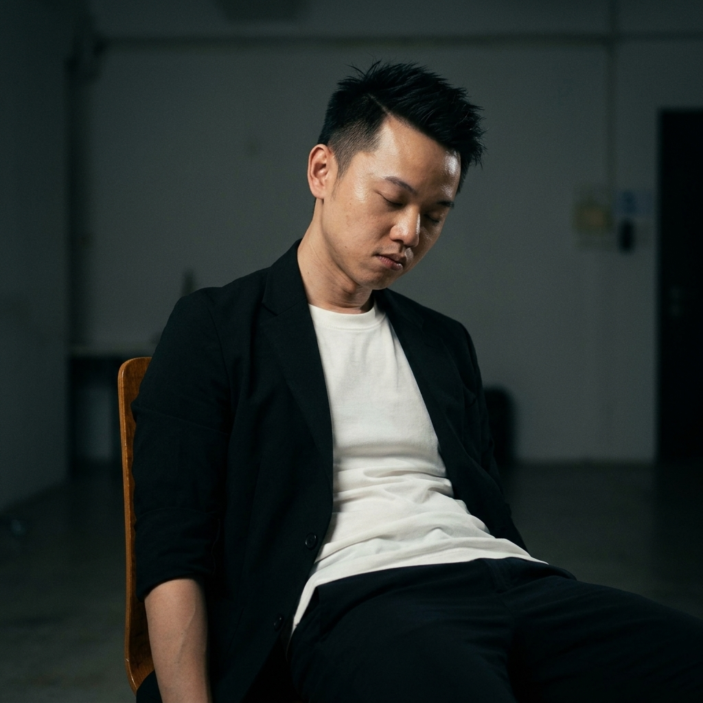

Hệ thống thần kinh học vi mô nhận diện biến động nội tâm và kịch bản ứng biến 3 giây cứu thể diện — Chuẩn hóa từ phong cách thực chiến của anh Nguyễn Việt.
Khi ngồi trước đối tác, khách hàng hoặc trong cuộc họp căng thẳng, não bộ của bạn phải phân bổ năng lượng để vừa nói, vừa phân tích lý lẽ.
Nén toàn bộ 10 dấu ấn thành 2 PHA DUY NHẤT. Chỉ cần một cái liếc mắt trong 0.5 giây, bạn biết chính xác cần IM LẶNG hay CHÌA TAY ĐỠ.
Đừng cố nhớ 10 dấu ấn. Hãy chia cơ thể đối phương thành 2 trạng thái vật lý duy nhất:
Tín hiệu vi mô: Nín thở, cắn răng, nuốt khan, bấu mép bàn, thắt dạ dày.
Hạ cằm xuống 1cm, giữ ánh mắt bình thản. Tuyệt đối không bồi thêm lý lẽ hay dồn ép, để sự thật tự thẩm thấu vào não họ.
Tín hiệu vi mô: Thở hắt ra xả khí, sập bờ vai, cụp ánh mắt nhìn đùi, xoa gáy, vỡ giọng.
Mở đầu bằng câu cứu thể diện: "Em biết đoạn này không hề dễ dàng..." rồi đưa ra phương án hành động cực nhỏ để họ gật đầu.
Chạm hoặc nhấp vào từng thẻ để lật xem cơ chế thần kinh, kịch bản hành động 3 giây và 3 tình huống thực chiến.
Đang nói chuyện, đột nhiên nín thở 1-2 giây, lồng ngực treo lơ lửng, mắt sững sờ đóng băng.
Cơ chế: Động vật đóng băng/giả chết khi gặp thú dữ để giấu âm thanh sinh tồn. Đụng trúng rủi ro tài chính hoặc điểm mù cốt lõi.
Môi ngậm chặt, cơ nhai góc hàm bạnh nổi cục, thái dương giật nhẹ kìm nén uất ức.
Cơ chế: Bản năng chuẩn bị "cắn xé" kẻ thù, hoặc đang phải nuốt một cục tức vào trong. Cảm thấy bất công hoặc bị đè nén.
Cổ họng khô khốc, yết hầu giật ngược lên nuốt một ngụm khan đắng ngắt, môi mím chặt.
Cơ chế: Cortisol tăng vọt ép tuyến nước bọt ngừng tiết, cổ họng khô khốc. Phải nuốt ngược sự nhục nhã hoặc sợ hãi vào bụng.

PHA THẮTBấu chặt mép bàn, thành ghế, siết hai bàn tay vào nhau đến mức các khớp ngón tay trắng bệch.
Cơ chế: Bám víu vật lý để tìm điểm tựa khi nội tâm đang rơi tự do. Cơ vận động siết cực đại nhằm kìm nén xung động bùng nổ.
Tay ôm vùng bụng trên/chấn thủy, cảm giác hẫng và lạnh toát đáy dạ dày. (Tự soi chính mình).
Cơ chế: Máu rút cạn khỏi hệ tiêu hóa dồn về tứ chi chuẩn bị "Chiến hay Biến". Trực giác ngửi thấy mùi nguy hiểm trước vỏ não.
Miệng hé mở thổi ra một luồng khí nén dài, ngực xẹp xuống, mắt nhắm lại trút gánh nặng.
Cơ chế: Trút bỏ toàn bộ khí oxy bị nén. Từ bỏ lớp vỏ bọc ngụy trang (Ego). Lớp giáp vỡ nát, họ chuẩn bị trao sinh mệnh.

PHA CHÙNGToàn bộ trương lực cơ vai sụp xuống, đầu hơi chúi về phía trước, lưng gập nhẹ buông bỏ.
Cơ chế: Não ngưng bơm năng lượng để "gồng", cơ vai mất trương lực. Họ đã kiệt sức vì ngụy biện và đầu hàng vật lý.
Nhìn thẳng xuống mũi chân hoặc đùi, mi mắt trĩu nặng thể hiện sự hổ thẹn tổn thương thể diện.
Cơ chế: Tránh né ánh sáng và sự phán xét để che giấu Sự Xấu Hổ (Shame). Khác với nhìn ngang suy nghĩ logic, cụp mắt là Ego bị tổn thương.
Vô thức đưa tay xoa gáy, vuốt cổ, chà xát cánh tay hoặc bóp nhẹ dái tai tự trấn an.
Cơ chế: Huyết áp tăng vọt, hệ thần kinh ra lệnh tự vuốt ve cơ thể (như cái ôm của mẹ) để kích thích dây phế vị hạ nhịp tim.
Đang nói dõng dạc đột nhiên giọng nghẹn lại, rè rè đứt quãng, tụt âm lượng về tiếng thì thầm.
Cơ chế: Năng lượng sinh tồn cạn kiệt, không đủ hơi đẩy lên thanh quản gây co thắt. Họ đã mất niềm tin vào chính lời bao biện của mình.
Từ phòng họp kín, bàn đàm phán triệu đô cho tới xung đột gia đình — Toàn bộ 30 bệnh án tâm lý vi mô và cơ chế chốt hạ:
Cơ chế thần kinh: Động vật đóng băng / giả chết khi gặp thú dữ để giấu âm thanh sinh tồn.
Bạn báo giá "Gói này 200 triệu". Khách vẫn mỉm cười nhưng lồng ngực treo lơ lửng, nín thở mất 1.5 giây.
Hỏi: "Tại sao em nghỉ công ty cũ?". Ứng viên khựng thở 1 nhịp, mắt chớp nhanh liên hồi.
Vợ lướt điện thoại hỏi: "Hôm qua anh đi với ai?". Chồng đang nhai cơm đột ngột dừng lại, quên nhịp thở ra.
Cơ chế thần kinh: Bản năng chuẩn bị "cắn xé" kẻ thù, hoặc đang phải nuốt một cục tức vào trong.
Sếp mắng vô lý. Nhân viên cúi mặt vâng dạ, nhưng phần ngạnh hàm dưới mang tai giật giật, nổi cục cơ.
Bạn ép giá gắt. Khách hàng cười đồng ý nhưng hai hàm răng siết chặt một tích tắc rồi mới nói.
Vợ bảo "Em không sao đâu", nhưng hai hàm răng nghiến chặt rít lên từng tiếng qua kẽ môi.
Cơ chế thần kinh: Cortisol tăng vọt ép tuyến nước bọt ngừng tiết, cổ họng khô khốc đắng ngắt.
Diễn giả bước lên sân khấu, trước khi cất giọng phải nuốt nước bọt cái "ực", yết hầu trượt mạnh lên cao.
Vạch mặt kẻ nói dối, họ không cãi được, chỉ nuốt khan liên tục và cắn chặt môi dưới.
Sale non tay chuẩn bị báo giá hợp đồng chục tỷ, họng khô khốc phải nuốt khan trước khi thốt ra con số.
Cơ chế thần kinh: Bám víu vật lý để tìm điểm tựa khi nội tâm đang rơi tự do không trọng lượng.
Người mới lên sóng, miệng cười nói nhưng tay giấu dưới gầm bàn vò nát vạt áo hoặc bấu chặt tay vịn đến trắng ngón.
Bị khách chửi xối xả, nhân viên CSKH bấm móng tay ấn sâu vào lòng bàn tay đến rướm máu.
Khách kể về các khoản nợ, hai bàn tay đan chặt vào nhau bóp nghẹt, cào miết khớp ngón tay liên tục.
Cơ chế thần kinh: Máu rút cạn khỏi hệ tiêu hóa dồn về tứ chi để chuẩn bị "Chiến hay Biến".
Vừa ấn "Gửi" nhầm báo cáo tài chính mật cho đối thủ. Dạ dày lập tức rơi thịch xuống, lạnh toát vùng chấn thủy.
Mở xem doanh số tụt thê thảm, không thấy đau đầu mà thấy buồn nôn, ruột gan cồn cào như đói lả.
Chuẩn bị ký hợp đồng đẹp như mơ, logic không thấy lỗi, nhưng cứ cầm bút lên là bụng lại thắt quặn lại.
Cơ chế thần kinh: Trút bỏ toàn bộ khí oxy bị nén. Từ bỏ lớp vỏ bọc ngụy trang (Ego).
Bạn nói: "Anh kiệt sức không phải vì thiếu tiền, mà vì sự cô độc". Sếp sững lại, há miệng thở hắt ra tiếng "phù" rũ rượi.
Bác sĩ báo: "Chỉ là u lành". Bệnh nhân xẹp lồng ngực xuống, thở dài một hơi thật sâu như vừa tái sinh.
Khách chê đắt, bạn dùng logic sắc bén đập tan mọi cớ. Khách thở phì một cái, lặng lẽ rút ví.
Cơ chế thần kinh: Não ngưng bơm năng lượng để "gồng", toàn bộ cơ vai mất trương lực.
Nhân viên gân cổ cãi, bạn quăng ra video camera an ninh. Hai bờ vai đang gồng nhô cao đột ngột sập hẳn xuống, lưng gù lại.
Khách đang xù lông nhím chửi bới. Bạn nói trúng nỗi đau uất ức của họ. Người họ nhũn ra, tựa hẳn lưng ra sau ghế, vai xệ xuống.
Đi làm về sau 1 ngày diễn kịch giả tạo ngoài xã hội, đóng cánh cửa phòng, toàn thân sụp xuống ghế nhão như bún.
Cơ chế thần kinh: Tránh né ánh sáng và sự phán xét để che giấu Sự Xấu Hổ (Shame).
Hỏi: "Gói này 50 triệu, anh đủ tài chính chứ?". Khách nói "Đủ", nhưng ánh mắt cụp thẳng xuống mép bàn hoặc mũi giày.
Kẻ vay tiền không chịu trả, khi vô tình chạm mặt ở hành lang, không bao giờ dám nhìn thẳng, mắt dán chặt xuống sàn nhà.
Lên bục nhận giải thưởng mà mình mua bằng tiền bẩn, mắt không dám nhìn thẳng khán giả, cắm gằm xuống tờ kịch bản.
Cơ chế thần kinh: Huyết áp tăng, hệ thần kinh ra lệnh tự vuốt ve cơ thể để hạ nhịp tim.
Bị hỏi xoáy, ứng viên trả lời trơn tru nhưng tay vô thức đưa ra sau gáy xoa xoa, vuốt vuốt đốt sống cổ liên tục.
Ngồi đối diện người có quyền lực áp đảo, cô gái vòng chéo hai tay tự vuốt ve, chà xát cẳng tay của chính mình.
Chém gió về lợi nhuận công ty, tay đưa lên gãi nhẹ sống mũi hoặc vành tai trong lúc nói.
Cơ chế thần kinh: Năng lượng sinh tồn cạn kiệt, không đủ hơi đẩy lên thanh quản gây co thắt.
Đang dõng dạc cam kết KPI, đến đoạn cuối cùng giọng tụt xuống, mỏng dính, rè rè đứt quãng từng từ.
Cố cãi câu cuối cùng trước khi thua, giọng the thé lên một tiếng, vỡ nát rồi im bặt hoàn toàn.
Khi bạn chẩn đoán trúng khối u 10 năm của họ, họ đáp "Làm sao cậu biết..." bằng chất giọng khàn đặc nghẹn ngào.
Đối chiếu 1 giây nhận biết vi mô cơ thể và hành động phản xạ chuẩn mực tương ứng:
| HÌNH | DẤU ẤN (SOMATIC) | TÍN HIỆU VI MÔ (1S) | BẢN CHẤT NGẦM & VÍ DỤ ĐIỂN HÌNH | KỊCH BẢN PHẢN XẠ 3 GIÂY |
|---|---|---|---|---|
|
1. Khựng nhịp thở
Micro-Freeze • Pha Thắt
|
Nín thở 1-2s, lồng ngực treo lơ lửng | Sốc rủi ro tài chính: Báo giá 200tr khách cười nhưng quên thở 1.5s. Đụng trúng điểm mù sinh tồn. | Dừng nói ngay lập tức. Giữ im lặng 3s, chờ họ thở lại nhịp bình thường. | |
|
2. Căng cơ hàm
Jaw Clenching • Pha Thắt
|
Răng nghiến chặt, cơ nhai phồng lên | Căm phẫn / uất ức ngầm: Sếp mắng, nhân viên vâng dạ nhưng ngạnh hàm giật cục, chuẩn bị nghỉ việc. | Công nhận nỗ lực: "Em biết anh em mình đã cày rất rát đoạn vừa rồi..." | |
|
3. Nuốt khan / Yết hầu
Dry Swallow • Pha Thắt
|
Yết hầu trượt mạnh, cổ họng khô khốc | Nuốt nhục / sợ hãi: Bị bóc phốt dồn vào chân tường; sale non tay chuẩn bị báo giá chục tỷ. | Tạo nhịp thở: Đưa ly nước hoặc bảo "Uống ngụm nước đã anh..." | |
|
4. Trắng đốt ngón tay
White Knuckling • Pha Thắt
|
Bấu chặt mép bàn, khớp tay trắng bệch | Bám víu tìm kiểm soát: Người mới lên sóng tay bấu chặt vịn ghế; nhân viên bấm móng tay kìm cơn giận. | Đổi thế cầm nắm: Đẩy cuốn sổ/tài liệu sang để họ thả lỏng bàn tay. | |
|
5. Lạnh bụng / Dạ dày
Gut Drop • Pha Thắt
|
Tay ôm chấn thủy, hẫng lạnh ruột gan | Trực giác ngửi mùi nguy hiểm: Vừa gửi nhầm email mật; doanh số tụt dốc cồn cào buồn nôn (Tự soi). | Thả lỏng 2 bàn chân: Tự gọi tên: "Mình chỉ đang sợ mất mặt." | |
|
6. Thở hắt ra thườn thượt
Heavy Exhale • Pha Chùng
|
Xả luồng khí nén dài, ngực sụp xuống | Vỏ bọc Ego vỡ vụn: Bị chẩn đoán đúng sự cô độc, thở hắt "phù" rũ rượi giao sinh mệnh. | Mở lối không phán xét: "Anh thấy mệt nhất ở đoạn nào, cứ nói thật..." | |
|
7. Bờ vai chùng thõng
Shoulder Collapse • Pha Chùng
|
Vai sập xuống, người nhũn ra tựa ghế | Đầu hàng vật lý: Bị chìa camera an ninh nhân viên sập vai; khách xù lông chuyển sang khuất phục. | Chốt giảm tải: "Việc nặng nhất để em lo. Giờ mình gỡ đúng 1 nút thắt này..." | |
|
8. Ánh mắt cụp xuống đất
Downward Aversion • Pha Chùng
|
Nhìn chằm chằm mũi giày hoặc mép bàn | Sự Xấu Hổ (Shame): Sĩ diện nhận đủ 50tr nhưng mắt cắm xuống đất; con nợ lẩn tránh ánh nhìn. | Cứu thể diện: "Thực ra thị trường đợt này ai làm cũng dính đòn..." | |
|
9. Hành vi tự xoa dịu
Pacifying • Pha Chùng
|
Tay xoa gáy, vuốt cổ, chà cánh tay | Hạ Cortisol khẩn cấp: Ứng viên bị hỏi xoáy tay xoa gáy; nói dối gãi nhẹ vành tai. | Đồng minh vật lý: Ngả lưng ra sau ghế cùng nhịp, hạ âm lượng xuống 20%. | |
|
10. Giọng vỡ / Tụt âm vực
Vocal Fry • Pha Chùng
|
Giọng nghẹn mỏng, rè đứt quãng thì thầm | Tuyến phòng ngự gãy vụn: Hết hơi ngụy biện KPI; nhận ra khối u 10 năm "Làm sao cậu biết...". | Chốt việc cực nhỏ: "Tuần này mình chưa cần làm gì lớn, chỉ làm đúng bước này..." |
Chụp lại màn hình bên dưới lưu vào album ảnh điện thoại. Liếc nhìn 5 giây trước khi bước vào phòng họp hoặc bàn đàm phán:
"Trong mọi cuộc đàm phán hay xung đột, người chiến thắng thực sự không phải là người dồn đối phương vào chân tường để họ nhục nhã, mà là người biết nhận ra khoảnh khắc họ sụp đổ để chìa tay nâng đỡ và giữ lại cho họ một con đường thoát thể diện."